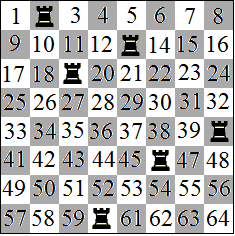

Chess board fields are numbered in rows from top to bottom by the numbers from 1 to 64. 6 rooks are randomly assigned to the board, which do not capture each other $($one of the possible arrangements is shown in the figure$)$. Find the mathematical expectation of the sum of the numbers of fields occupied by the rooks.

Let $X_k$ be the number of the field, where the rook number k $($k = 1, ..., 6$)$ is located. Then the sum of the numbers of the fields is Y = $X_1 + X_2 + ... + X_6$. Any of the rooks can, with equal chances, be in any field. Therefore, $EX_k = (1 + 64)/2$ = 65/2, and EY = 6EX1 = 195.
195.